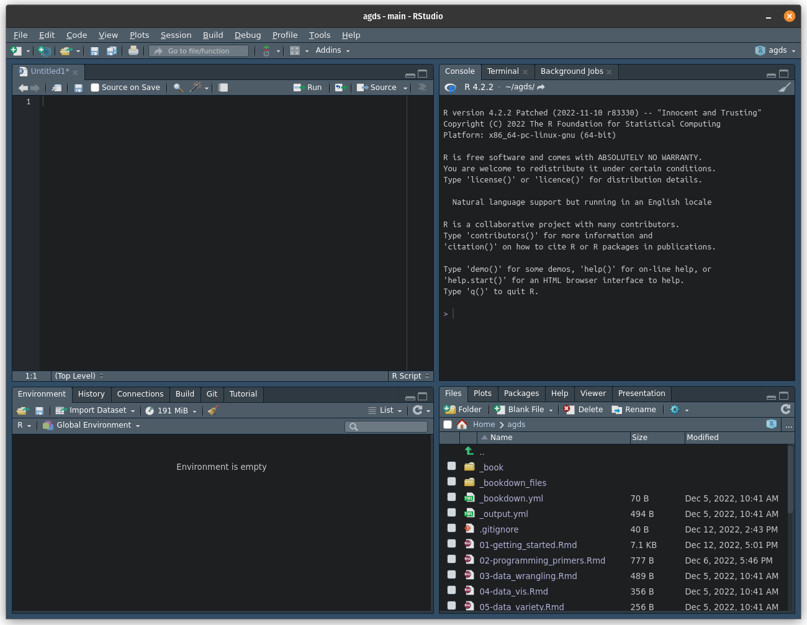

# Calculate the sum of 1, 2, and 3
1 + 2 + 3[1] 6This chapter provides a start at the very beginning of your journey in Applied Geodata Science with two main aims. First, it introduces the very basics for readers with no experience using R. You will be able to:
We will work with R throughout this book. R is a free, open-source programming language and software environment. It provides excellent functionalities for data transformation and visualisation, and offers a user-friendly ecosystem of machine learning implementations and geospatial analysis. It also offers rich resources for documentation and tutorials, and an active and professional developer community around RStudio and the tidyverse. RStudio is an integrated development environment (IDE) that provides a user-friendly “center stage” for your work in R (and Python, see here). Together R and RStudio offer a well-documented, and user-friendly environment for programming in (Applied) Geodata Science.
RStudio provides a user-friendly interface for writing, running, and debugging R code. When you open RStudio, you will see the following:

The interface is divided into four main panels:
Once you have both programs installed, you can open RStudio and begin a new R session. To run R code using R Studio, follow these steps:
For example, let’s say you want to calculate the sum of the numbers 1, 2, and 3. You can write the following code in the console or in the source editor:
If you’ve entered it in the console, press Enter. If you’ve entered it in the source editor, you can press the Run button or use the keyboard shortcut to run the code. The output will be displayed in the console:
> 1 + 2 + 3
[1] 6In addition to running single statements in the R console, the output of a statement can be saved as a new object. There are many kinds of R objects, some of which are covered here and in future chapters.
First, we will introduce the different types of data that one can encounter. We can classify variables according to what values they take.
TRUE or FALSE (a variable indicating whether the person has siblings or not).Next, we will see how these different types of variables can be treated in R.
In R, a variable is a named location in memory that stores a value. To create a variable, you simply assign a value to a name using the <- operator (or the = operator, which has an equivalent role when assigning values to a variable, but <- is preferred). For example:
This code creates a variable called my_variable and assigns the value 5 to it. You can access the value of a variable or any other object by simply referring to its name, like this:
When you run this code, the value of my_variable will be printed to the console. Running print(my_variable) is an alternative syntax, using the print() function.
In R, every object and value has a class that determines how it is stored and how it behaves. For example, the 5 in our example above is a number, so its class is numeric. To find out the class of a value or a variable, you can use the class() function, like this:
The most basic classes are:
numeric (num) - any real number, e.g. 2.375integer (int) - integer numbers, e.g. 2character (chr) - any string, e.g., "fluxes"logical (logi) - binary, i.e., either TRUE or FALSE.factor (Factor) - categorical data, the variable can only be one of a defined number of options, e.g., one of C3, C4, or CAM (the three pathways of photosynthesis). Factors may also be given an order.function - a set of statements organized to perform a specific task, for example mean()By default, any number is coerced as "numeric". So if you want an integer value to have class "integer", you need to specify it like this:
Sometimes, you need to convert the class of an object, for example turning an "integer" number into a "character". You can do so as follows:
Note that now, the values are in quotes "5". This way, R interprets it as a text and you will not be able to do any numeric calculations with it anymore.
A vector in R is a sequence of data elements of the same class. Vectors can be created with the c() function, which stands for concatenate, i.e., to link together in a series or chain. For example, the following code creates a numeric vector:
To access the elements of a vector, you can use the square bracket notation. For example, the following code retrieves the second element of the vector x:
You can also use the square bracket notation to extract a sub-vector from a larger vector. For example, you can extract the second to fourth elements of the vector x:
Another useful property of vectors in R is that they can be easily combined using arithmetic operators. For example, adding the elements of two vectors x and y element-wise:
R also supports vectors of other classes, for example character vectors. Since all elements must be of the same class, the most general class will be adopted. The following code concatenates the vectors x and y, followed by new character elements:
[1] "1" "2" "3" "4" "5" "6" "seven" "eight"[1] "character"Operations on vectors are performed element-wise. For example, if we ask what numbers in x are greater than 2, we obtain a vector of logical values (and class "logical"):
Vectors that contain sequences of numbers are often needed in programming. They are easily created in R, e.g., by:
More flexibility is offered by the seq() function:
Often, we need to evaluate multiple elements in a vector. We’ve learned that the operator > tests whether the value left to it is greater than the value on its right and returns a logical. We can subset a vector based on a vector of equal length that contains logicals.
We can also determine the indices (positions of elements in the vector) that evaluate to TRUE, or that have the lowest value:
Elements can be dropped from vectors by referring to indices:
Lists are R objects, of class "list". They are a bit like vectors, but more flexible. They allow us to store different types of data, even if they are of different lengths or of different classes. They are created with the function list() and can be named or not. Here is an example where each element of the list is named.
Similar to vectors, we can extract elements from lists, either by index [[1]] or by the name using [["temperatures"]] or $temperatures. Note the double [[]] here, indicating an element of a list as opposed to [] indicating an element of a vector. To get the entire vector of temperatures, do either of the three:
[1] 2.234 1.987 4.345[1] 2.234 1.987 4.345[1] 2.234 1.987 4.345Note below how, if we index the list like we would index a vector, a list with just one element would be returned, rather than the element itself. [ is used to subset a list (and a list is returned). In contrast, [[ or $ extract a single element from a list. A thorough explanation of these differences is given here and here.
$temperatures
[1] 2.234 1.987 4.345[1] 2.234 1.987 4.345To get the first temperature value, which is an element of the vector (at the same time an element of the list), we can run:
You can also append elements to the list (either way is possible):
This was a very condensed introduction to vectors and lists. A more complete introduction is given here.
A data frame, an object of class "data.frame", is essentially a table, consisting of named columns and rows. A data frame can be created as follows:
df <- data.frame(
name = c("Maria", "Peter", "Alex", "Charlie"),
age = c(13, 56, 30, 42),
is_married = c(FALSE, TRUE, TRUE, FALSE)
)
df name age is_married
1 Maria 13 FALSE
2 Peter 56 TRUE
3 Alex 30 TRUE
4 Charlie 42 FALSEA data frame can also be understood as a list of vectors of equal length, whereby each vector vector makes up a column and each of these vectors (columns) contains values of the same type. This notion makes it also evident that the elements of a data frame can be accessed the same way like we access elements of lists. To get the vector corresponding to the column named age, we can do:
Data frames can be also be treated as a matrix. Note that the first index refers to rows and the second to columns. For example:
[1] "Maria" "Peter" "Alex" "Charlie" name age is_married
2 Peter 56 TRUE[1] 56The method of selecting parts of a data frame by index is quite flexible. For example, we may require the information in the third column for the first three rows. Putting a colon between two numbers, e.g. [1:3,], indicates we want to select the rows numbers starting at the first and ending with the second number. So here [1:3,] will give us rows one, two and three. This can be combined with subsetting for the other dimension as well:
To reduce the data frame to fewer columns/rows that are not contiguous, the function c() is used. This outputs the data frame reduced to the selected row or column numbers inside c(). Another method is to select the columns by column names, i.e. giving as input a string vector with the name of each column we want to select. For example, the following commands give the same output:
name is_married
1 Maria FALSE
2 Peter TRUE
3 Alex TRUE
4 Charlie FALSE name is_married
1 Maria FALSE
2 Peter TRUE
3 Alex TRUE
4 Charlie FALSEThere are several base R functions to help you understand the structure of a data frame. Here is a non-exhaustive list of of them:
dim() - Returns the dimensions of an object (here: number of rows and columns).nrow() - Returns the number of rows of an object.ncol() - Returns the number of columns of an object.head() - Returns the first 6 rows.tail() - Returns the last 6 rows.View() - Opens a window in the source panel in RStudio where you can look at the entire data set in the form of a table.names() - Returns the column names (for data.frame objects it is synonymous to colnames()).rownames() - Returns the row names.For example, the data frame df has 4 rows and 3 columns:
There are many more things you can do with data frames. Since they are central to analyzing data with R, we have dedicated all of Chapter Chapter 7 to teach you how to work with data frames in a tidy way with the {tidyverse} collection of packages.
R has two representations for missing values: NA and NULL. Similar objects also exist in other programming languages.
NA is an identifier to mark missing data and stands for not available. You will encounter this when reading data into a data frame, and some of its cells show NA because that value is missing. Also, if you ask for the fourth element of a vector of length 3, R returns NA.
In general, operations on vectors that contain at least one NA value return NA. For example:
To remove all missing values in the function evaluation, the common argument to set in the respective function call is na.rm. By default, it is usually set to FALSE, but we can do:
Furthermore, NA counts as an element in vectors. A variable assigned just NA would have length 1 (of class "logical") and the vector above has length 3, as can be determined using the length() function, and has class "numeric".
Whether a value is missing can be tested by:
By contrast, NULL is the R null object or empty space. You can also assign NULL to a variable, which will then have length zero because it is empty. Functions may return NULL when no output was defined, or if an error occurred.
The set of objects (variables, data frames, etc.) defined during an R session are referred to as the environment. You can view the objects in RStudio in the environment panel in RStudio, grouped as Data, Values and Functions.
After closing an existing R session (e.g., after quitting RStudio), the environment defined by the user during that session will not be saved automatically and will not be available in your next R session. You should avoid saving your entire environment. Rather, save individual objects into files and read them in explicitly in the next R session, as described below. This gives you control, transparency, and ensures better reproducibility.
Any object can be written to a file and read from a file into your R session. To make reading and writing files and naming objects transparent, it is advised that you save single R objects into an individual files, and that the file name corresponds to (or contains) the name of the object in R. For example:
This creates a binary file which is fast to write and read, but only intelligible to R (and not to the human eye or another program). Such files are commonly identified by the suffix .rds. When publishing and sharing data, follow Open Science principles (Chapter Chapter 5) and avoid file formats that are not readable across different platforms and programming languages. Since the object written here is a data frame, and therefore tabular data, we may also write it in a CSV file - a file format that is text-based and readable across platforms and softwares.
In the code chunks above, you may note two aspects:
.rds and .csv files from the readr package. This package is part of the tidyverse – a collection of R packages that enable a homogenised way of coding for data science implementation in its own R “dialect”. It implements similar functionalities as the base R functions saveRDS() and readRDS(), or write.csv() and read.csv().here() from the R package here. This creates a path, relative to the project’s parent directory and enables full portability of the code within your project. In other words, it doesn’t matter whether you run that line of code from within different subdirectories. More on such project-oriented coding in Section Chapter 3.Note also that it should be avoided to write data into .RData files and use the function load("filename.RData") since this obscures the object names of the loaded data.
The R {base} package contains the basic functions which let R function as a programming language: arithmetic, input/output, basic programming support, etc. Its contents are always available when you start an R session. Here we introduce the main binary operators, which work on vectors, matrices and scalars.
Arithmetic operators:
+ addition- subtraction* multiplication/ division^ or ** exponentiation%% modulo operator (returns remainder of a division)Logical operators:
> greater than>= greater than or equal to== exactly equal to< less than<= less than or equal to!= not equalIn cases where we want certain statements to be executed or not, depending on a criterion, we can use conditional statements if, else if, and else. Conditionals are an essential feature of programming and available in all languages. The R syntax for conditional statements looks like this:
The evaluation of the criterion inside the round brackets (here (temp < 0.0)) has to return either TRUE or FALSE. Whenever the statement between brackets is TRUE, the chunk of code between the subsequent curly brackets is executed. You can also write a conditional that covers all possibilities, like this:
When the temperature is below 0, the first chunk of code is executed. Whenever it is greater or equal that 0 (i.e. the condition returns FALSE) the second chunk of code is evaluated.
You can also write more than two conditions, covering several cases:
Note: In the code chunks above, an indentation was used to highlight which parts go together, which makes the code easy to understand. Indentations are not evaluated by R per se (unlike in other programming languages, e.g., Matlab, Python), but help to make the code easier to read.
Loops are essential for solving many common tasks. for and while loops let us repeatedly execute the same set of commands, while changing an index or counter variable to take a sequence of different values. The following example calculates the sum of elements in the vector vec_temp by iteratively adding them together.
vec_temp <- seq(10) # equivalent to 1:10
temp_sum <- 0 # initialize sum
for (idx in seq(length(vec_temp))) {
temp_sum <- temp_sum + vec_temp[idx]
}
temp_sum[1] 55Of course, this is equivalent to just using the sum() function.
Instead of directly telling R how many iterations it should do we can also define a condition and use a while-loop. As long as the condition is TRUE, R will continue iterating. As soon as it is FALSE, R stops the loop. The following lines of code do the same operation as the for loop above. What is different? What is the same?
Certain functions are defined by base R - the R environment that is automatically available as you open R. For example, the mean() function can take a numeric vector as input and output the mean of its elements.
Other functions are not contained in base R, but are defined in R packages and become available only upon loading these packages. For example write_csv() from the readr package (see above).
Functions are their own object class "function":
Functions can also be specified by the user. Writing your own functions is an essential part of good programming. Often, analyses require many steps and your scripts may get excessively long. An important aspect of good programming is to avoid duplicating code. If the same sequence of multiple statements or functions are to be applied repeatedly, then it is usually advisable to bundle them into a new function and apply this single function to each object. This also has the advantage that if some requirement or variable name changes, it has to be edited only in one place. A further advantage of writing functions is that you can give the function an intuitively understandable name, so that your code reads like a sequence of orders given to a human.
For example, the following code, converting temperature values provided in Fahrenheit to degrees Celsius, could be turned into a function.
Functions are a set of instructions encapsulated within curly brackets ({}) that generate a desired outcome. Functions contain four main elements:
function(x){ ... } for the code making up the body of the function,Below, we define our own function f2c():
Functions are essential for efficient programming. Functions have their own environment, which means that variables inside functions are only defined and usable within that function and are not saved to the global environment. Functions restrict the scope of the domain in which variables are defined. Information flows inside the function only through its arguments, and flows out of the function only through its returned variable.
Functions (particularly long ones) can be written to separate source files with a suffix .R and saved in your ./R directory. Preferably, the file has the same name as the function. We can save the previous function in a script ./R/f2c.R and load it later by running source("./R/f2c"). It’s good practice to keep one file per function, unless a function calls another function that is called nowhere else. In that case, the “sub-ordinate” function can be placed inside the same .R file.
Packages, also called libraries, are collections of R functions, data, and complied code in a well-defined format. R comes with a standard set of packages (including {base} R, {utils}, {stats}…) and other packages targeted for specific applications are available for download and installation. Once installed, you need to load them each time you start a new R session to use them.
For example, the {tidyverse} package is used for data wrangling and will be covered in this course. This is a special package which loads many other packages in the background (like {readr}, {ggplot2}, etc.). You can install a new package as follows:
Then, you can load it with the following code. Note that now the name of the package is not in quotation marks.
You can now use the functions and features provided by the {tidyverse} package in your R scripts.
Imagine that you have loaded two packages named {lib1} and {lib2} with the
library()function. Now, all the functions in those two packages are available for use in R. But if both of them have a function calledfun()and you run the commandfun(my_vector), how does R know from which package that function comes? Normally, the package loaded last will “mask” the previous packages, such that their functions (if names are repeated) are used by R.
If you want to specify from which library to take a function, you can use the
::notation. So in our imaginary example we would uselib1::fun(). Furthermore, using the::notation allows to access a function without the package not being loaded. In general, it’s a good practice to specify the package from which a function comes with::.
At any time, you can see a list of your installed packages on the source panel with the following command:
And a list of the packages currently loaded:
[1] ".GlobalEnv" "package:stats" "package:graphics"
[4] "package:grDevices" "package:datasets" "renv:shims"
[7] "package:utils" "package:methods" "Autoloads"
[10] "package:base" This information can also be found on the Packages panel in RStudio. The loaded packages are shown with a tick mark.
Usually, multiple statements are needed to get, e.g., from reading data into R to final numbers and figures that make up a further analysis. Together, these multiple statements constitute a workflow and can be saved in an R script. A script is a text file named with the suffix .R to indicate that it is executable by R. It contains a sequence of R commands, which you can be executed, line by line, starting from the top.
To create a new script in RStudio, go to the File menu and select New File > R Script. This will open a new script file in the source editor. You can then type your R code in the script file and save it to your computer.
To run a script, you can either use the Source button in the source editor or use the keyboard shortcut Ctrl + Shift + Enter (Windows) or Command + Shift + Enter (Mac). This will run all of the commands in the script file, in the order they are written, in the console. Alternatively, you can type into the console:
> source("my_r_script.R")Note that, to be able to run the code above, the file
my_r_script.Rmust be in your current working directory. You must always specify the path to the file, also when sourcing code.
The material covered in this course will give you a solid basis for your future projects. Even more so, it provides you with code examples that you can adapt to your own purposes. Naturally, you will face problems we did not cover in the course and you will learn more as you go. Different approaches to getting help can be taken for different types of problems and questions.
“I know the name of a function that might help solve the problem but I do not know how to use it.” Typing a ? in front of the function will open the documentation of the function, giving information about a function’s purpose and method, arguments, the returned object, and examples. You have learned a few things about plots but you may not know how to make a boxplot:
Running the above code will open the information on making boxplots in R.
“There must be a function that does task X but I do not know which one.” Typing ?? will call the function help.search(). Maybe you want to save a plot as a JPEG but you do not know how:
Note that it only looks through your installed packages.
To search in the entire library of R go to the website rdocumentation.org or turn to a search engine of your choice. It will send you to the appropriate function documentation or a helpful forum where someone has already asked a similar question. Common questions have been raised before and may have been answered on stackoverflow.com – an online forum. In recent years, Artificial Intelligence-based tools (large language models) have emerged as a powerful solution to finding answers that relate directly to your problem.
If you do not understand the error message, start by searching for it on the web. Be aware that this is not always useful as developers rely on the error catching provided by R. To be more specific, add the name of the function and package you are using, to get a more detailed answer.
Worked examples are implementations of certain workflows that may serve as a template for your own purpose. It is often simpler to adjust existing code to fulfill your purpose than to write it from scratch. Vignettes are provided for many packages and serve as example workflows that demonstrate the utility of package functions. You can type …
… to get information about how to use the {caret} package in an easily digestible format. (You will learn more about caret in Chapter 10 and Chapter 11). Several blogs serve similar purposes and are a great entry point to learn about new topics. Examples are the Posit Blog (Posit is the company developing and maintaining RStudio and several R packages), R-bloggers, R-Ladies, etc.
If you cannot find a solution online, start by asking your friends and colleagues. Someone with more experience than you might be able and willing to help you. When asking for help it is important to think about how you state the problem. The key to receiving help is to make it as easy as possible to understand the issue you are facing. Try to reduce what does not work to a simple example. Reproduce a problem with a simple data frame instead of one with thousands of rows. Generalize it in a way that people who do not do research in your field can understand the problem. If you are asking a question online in a forum include the output of sessionInfo() (it provides information about the R version, packages your using,…) and other information that can be helpful to understand the problem. Stackoverflow has its own guidelines on how to ask a good question, which you should follow. Here’s a great template you should use for R-specific question. If your question is well crafted and has not been answered before you can sometimes get an answer within 5 minutes.
To use R and RStudio, you will first need to download and install them on your computer.
To install R, go to the CRAN website and download the latest version of R for your operating system. Once the download is complete, follo w the on-screen installation instructions for your operating system to install R.
To install RStudio, go to the RStudio website and download the latest version of RStudio for your operating system. Once the download is complete, follow the installation instructions for your operating system to install RStudio.
You either have installed R and RStudio at the start of this chapter or you had them in your computer already. If you belong to the second group, make sure that you update both R and RStudio to get the latest versions. Working with the latest version of R, RStudio and packages helps to avoid errors due to dependency conflicts. Now, let’s install all the required packages for this course and load them.
use_pkgs <- c(
"dplyr", "tidyr", "readr", "lubridate", "stringr", "purrr",
"ggplot2", "tidyverse", "visdat", "terra", "hexbin", "jsonlite",
"MODISTools", "forcats", "yardstick", "recipes", "caret",
"broom", "skimr", "cowplot", "scico", "hwsdr", "usethis",
"renv", "rsample", "modelr", "rmarkdown", "rpart",
"rpart.plot", "ranger", "sessioninfo", "ncdf4", "styler",
"here", "ecmwfr", "geodata", "pdp", "vip", "viridis"
)
new_pkgs <- use_pkgs[!(use_pkgs %in% installed.packages()[, "Package"])]
if (length(new_pkgs) > 0) install.packages(new_pkgs)
invisible(lapply(use_pkgs, require, character.only = TRUE))If the installation failed, there should be an error message “Installation of package … had non-zero exit status”. If so, check with teaching assistance.
Some R packages depend on one another (for example, all depend on {base} R), but they can also depend on software external to the R ecosystem. For Chapter 6, we will need the {ncdf4} package to work with netCDF files in R. NetCDF (network Common Data Form) is a file format for storing multidimensional scientific data (variables) such as temperature, humidity, pressure, wind speed, and direction. The package {ncdf4} depends on software that is not available as an R package, the netCDF command-line tools, which you need to install additionally on your computer.
To install the netCDF command-line tools, follow these instructions:
/bin/bash -c "$(curl -fsSL https://raw.githubusercontent.com/Homebrew/install/HEAD/install.sh)".brew --version.
brew install netcdf following this.install.packages("ncdf4") and see if it installs it correctly.
Note: The programm Terminal allows you to interact with your Mac through the command line and is installed automatically. You can open it through the Finder if you go to Applications > Utilities > Terminal.
xcode-select --install (if not installed already)./bin/bash -c "$(curl -fsSL https://raw.githubusercontent.com/Homebrew/install/HEAD/install.sh)".brew install netcdf.brew install gdal in the terminal.sudo apt install gdal-bin libgdal-dev in the terminal..exe file on the netCDF website..exe file and follow the installation dialog.You can check if the installation was successful by running the following code in the RStudio console:
terra::rast("https://raw.githubusercontent.com/geco-bern/agds_book/refs/heads/main/book/data/demo_data.nc")class : SpatRaster
size : 41, 71, 1 (nrow, ncol, nlyr)
resolution : 0.1, 0.1 (x, y)
extent : 4.95, 12.05, 43.95, 48.05 (xmin, xmax, ymin, ymax)
coord. ref. : lon/lat WGS 84 (CRS84) (OGC:CRS84)
source : demo_data.nc
varname : t2m (2 metre temperature)
name : t2m
unit : K
time : 2022-01-01 12:00:00 UTC Or, to be independent of R and the {terra} package, you can test it by running the following code in your bash terminal (on Mac or Linux):
r, write a few lines of code that calculates its area and its circumference. Run your code with different values assigned to r.Hint: Enter
piin your console.
Hint: Entering
print("agds")in your console returns"agds". Combining (concatenating) multiple strings into a single one can be done usingpaste().
Generate a sequence of numbers from 0 and \(\pi\) as a vector with length 5.
Hint: Consult the manual of the function
seq()by entering?seqin your terminal.
Rumors have it that young Carl Friedrich Gauss was asked in primary school to calculate the sum of all natural numbers between 1 and 100. He did it in his head in no time. We’re very likely not as intelligent as young Gauss. But we have R. What’s the solution?
Gauss calculated the sum with a trick. The sum of 100 and 1 is 101. The sum of 99 and 2 is 101. You do this 50 times, and you get \(50 \times 101\). Demonstrate Gauss’ trick with vectors in R.
Define a variable named x that contains an integer value and perform the following operations in sequence:
x by adding 1.x.x and save the result as x.x as half of the previous value of x.x.Print x. Restart the algorithm defined above by choosing a new arbitrary natural number.
Print the object datasets::rivers and consult the manual of this object.
Hint: If you don’t know how to solve a problem, help yourself on the internet.
Print the object datasets::quakes and consult the manual of this object.